The task tracker your company can call its own
Plan, assign and track your team's work on your own server, under your own name. Kanban boards, projects, daily to yearly plans, recurring tasks and email reminders, all branded with your logo and colours.
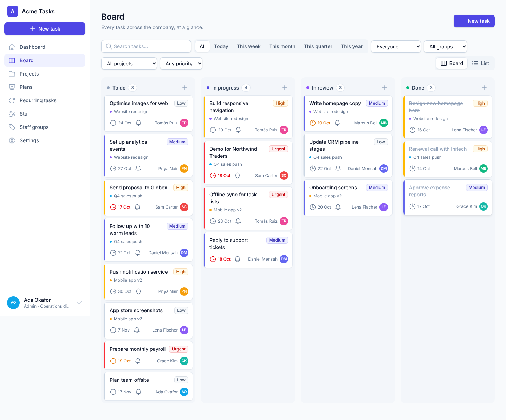
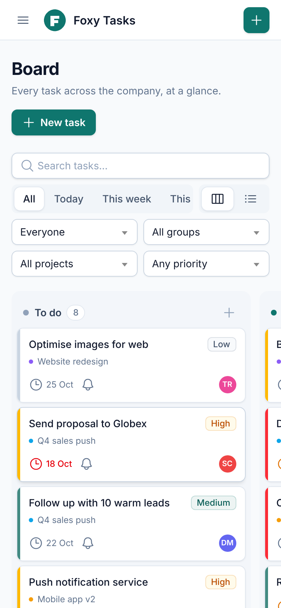
Simple enough for everyone, powerful enough to run the company
No bloat and no learning curve. Just the tools to plan the work, hand it out and make sure it gets done.
Kanban board
Every task at a glance in To do, In progress, In review and Done. Drag cards between columns, see priorities in colour and who each task is assigned to.
Projects
Group tasks by project, track progress, set a lead and dates, and attach briefs or specs. Archive finished projects and restore them any time.
Daily → yearly plans
Set goals for a day, week, month, quarter or year, for one person, a team or the whole company. Link tasks to a plan and watch progress fill up.
Recurring tasks
Weekly reports, monthly invoicing, daily checks: set them up once and they are created and assigned automatically on schedule.
Deadlines & email reminders
Whoever sets the task picks the deadline and when the reminder goes out. Staff are emailed when work is assigned and again before it's due.
Track every person
See what each person has for any day, week, month, quarter or year, with done, open and overdue counts.
Admin, manager & staff roles
Managers plan and assign work. Staff see and update their own tasks. Admins control settings and branding. Permissions are checked on the server.
Staff & groups
Add staff with an email invitation, organise them into groups such as Sales or Operations, and filter everything by group.
Files & proof of completion
Attach files to tasks and projects. They're stored in Cloudflare R2 by default (or S3, or on your server) and downloaded with private, expiring links.
From today's to-do list to this year's goals
Plans turn big goals into tracked work. Pick a period and who it's for, link tasks, and everyone can see how close you are.
- Daily, weekly, monthly, quarterly and yearly plans
- Plans for a person, a staff group or everyone
- Live progress from the tasks linked to each plan
- Filter the board by today, this week, month, quarter or year
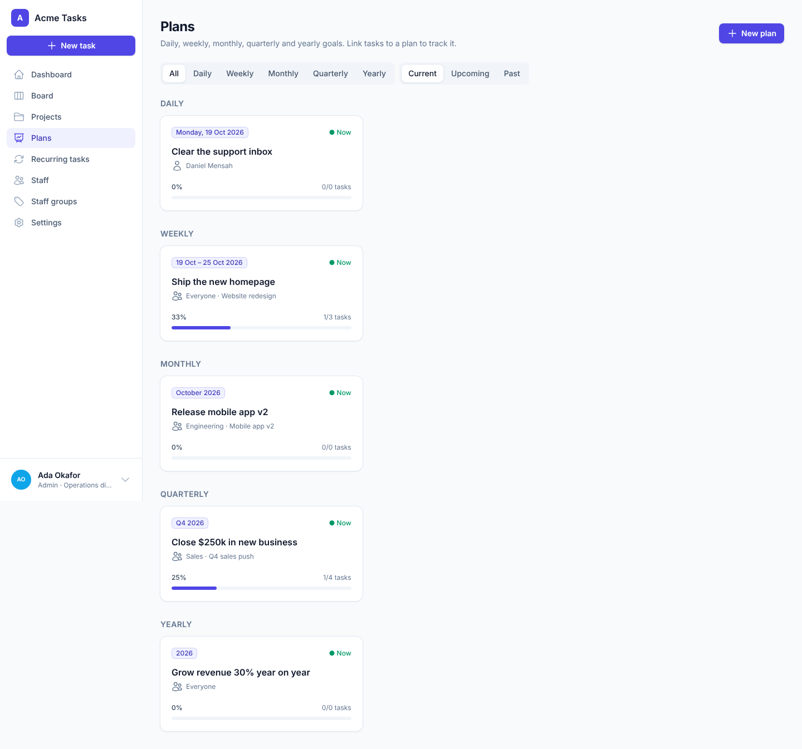
Know who's doing what, and what's running late
Managers see the whole team's workload at a glance and can open anyone's tasks for any period. Staff get a clear "My work" view.
- Tasks, completed, open and overdue counts per person
- Step back and forward through days, weeks, months and more
- Assign a task to someone in one click
- Deactivate leavers without losing their history
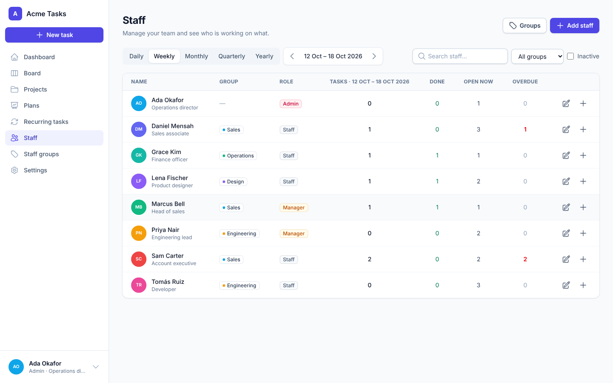
Your name. Your logo. Your colours.
From the Settings page, an admin can turn Task Tracker into your company's own app in under a minute. No code, no rebuild. The brand colour flows through every button, badge, checkbox and email.
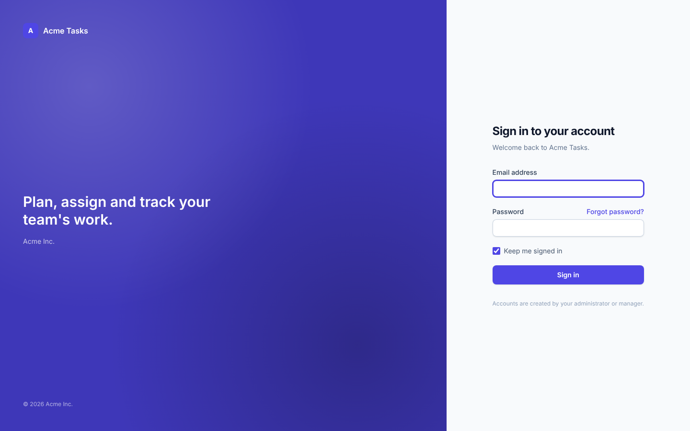
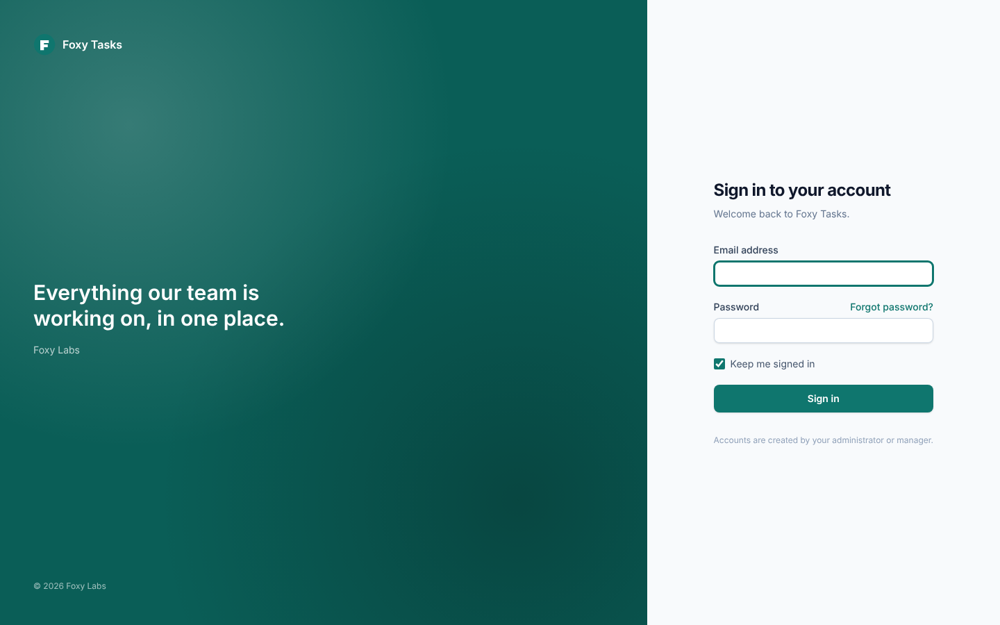
Name, logo & colour
Upload your logo (it's the browser icon too), set the app and company name, and pick a brand colour. Every shade is generated from it.
Your email, your SMTP
Enter SMTP details in Settings (stored encrypted) and send a test email. Reminders and invitations go out under your name.
Go further in code
It's plain Laravel, Blade and Tailwind. Change any screen, add features, and keep it all, because the MIT licence lets you.
The right access for everyone
Three simple roles. Every permission is enforced on the server, not just hidden in the interface.
| Admin | Manager | Staff | |
|---|---|---|---|
| See the board, projects and plans | All tasks | All tasks | Their own tasks |
| Create and assign tasks | Anyone | Anyone | Themselves |
| Change a task's deadline and reminder | ✓ | ✓ | Tasks they set |
| Move tasks and attach proof of completion | ✓ | ✓ | ✓ |
| Projects, plans and recurring tasks | ✓ | ✓ | — |
| Add staff and manage groups | ✓ | Staff accounts | — |
| Branding, SMTP and settings | ✓ | — | — |
Clean, fast and a pleasure to use
Searchable dropdowns everywhere, a custom date and time picker, and layouts that work just as well on a phone.
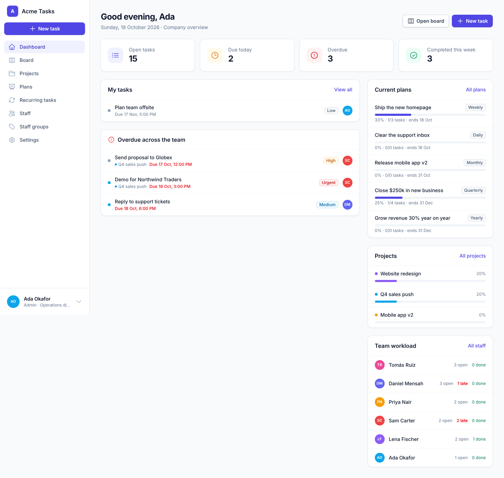
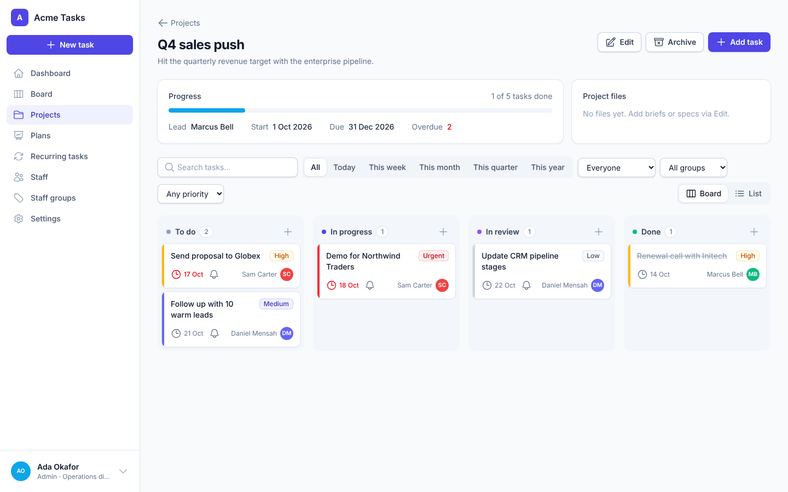
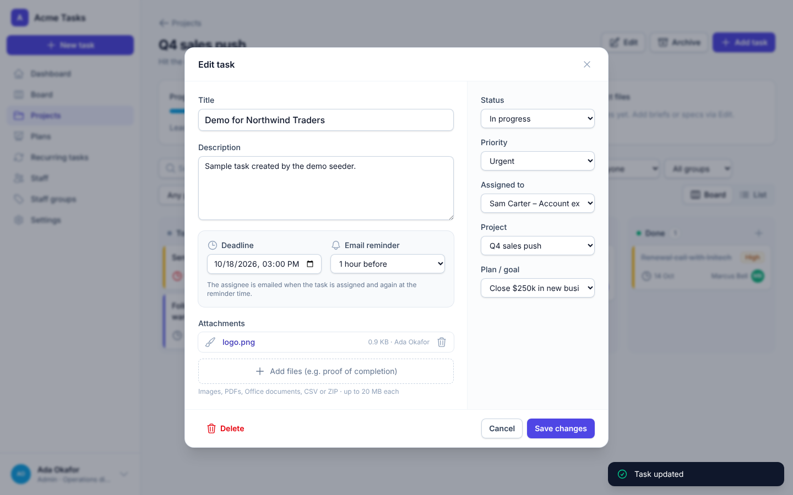
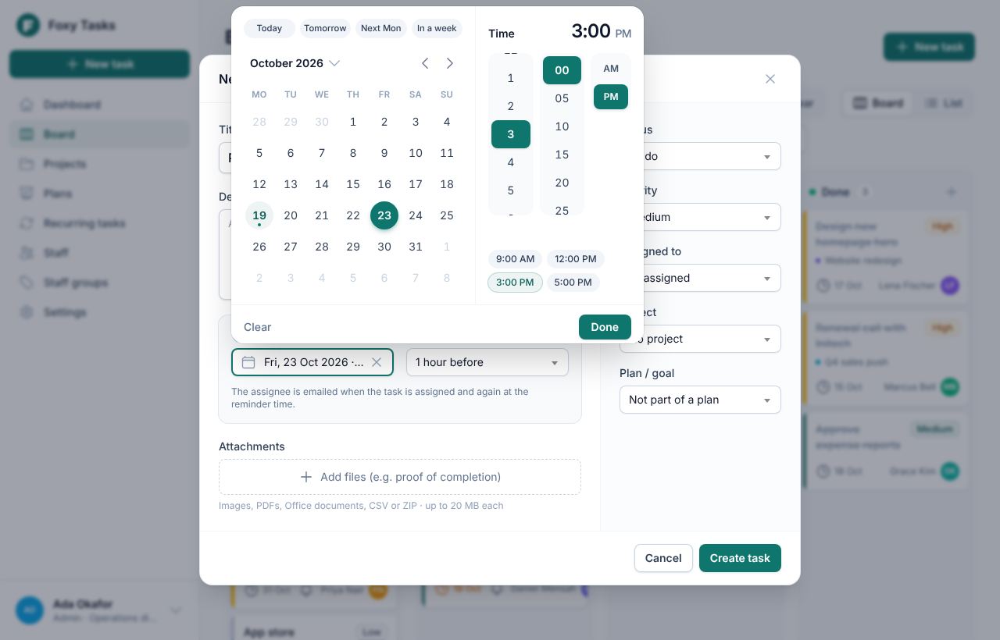
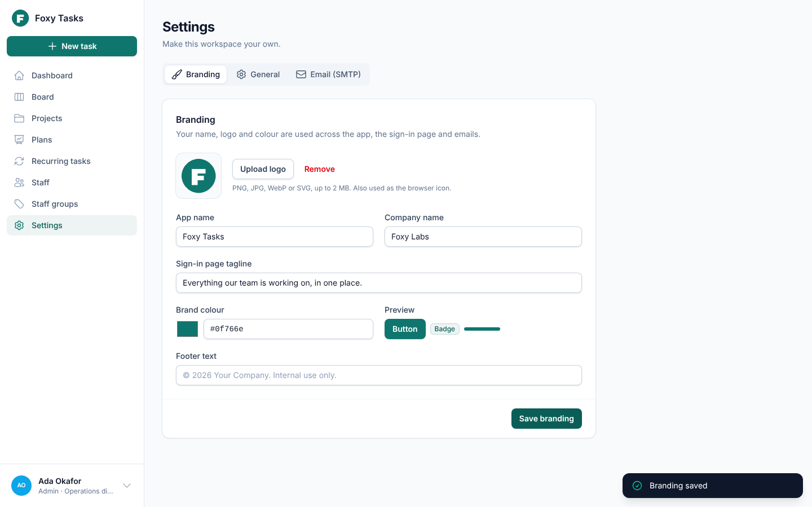
Up and running in minutes
Host it on any server that runs PHP, or start everything with Docker. On first visit, a setup wizard creates your admin account.
🖥️ On your server
Any Linux host, VPS or PHP hosting with SSH access.
# Get the code git clone https://github.com/thefoxylabs/simple-task-tracker.git task-tracker cd task-tracker # Install and configure composer install --no-dev --optimize-autoloader cp .env.example .env php artisan key:generate # edit .env: database, SMTP and R2 storage php artisan migrate --force npm ci && npm run build
Point your web server at public/ and add the scheduler to cron for reminders:
* * * * * cd /path/to/task-tracker && php artisan schedule:run
🐳 With Docker
The app, MySQL and the reminder scheduler, started with one command.
git clone https://github.com/thefoxylabs/simple-task-tracker.git task-tracker
cd task-tracker
cp .env.example .env
# set APP_KEY, APP_URL, SMTP and R2 in .env
docker compose up -dThen open http://localhost:8080.
🧪 Try it with demo data
php artisan migrate:fresh --seed --seeder=DemoSeeder
Sign in as admin@example.com, manager@example.com or staff@example.com. The password is password.
Full instructions are in the README. Tip: set SETUP_TOKEN in .env so only you can create the first admin.
Make it yours today
Download the complete source code. It's free forever under the MIT licence, with no accounts, limits or tracking.
git clone https://github.com/thefoxylabs/simple-task-tracker.gitQuestions, answered
Is it really free?
Yes. Task Tracker is open source under the MIT licence. Use it for any number of users, change it however you like, and use it commercially. There are no paid tiers.
Can we remove your name and use our own brand?
Absolutely, that's the point. Set your app name, logo and colour in Settings and your team will only ever see your brand. The MIT licence only asks that you keep the licence notice in the source code.
What do we need to host it?
A server that runs PHP 8.2+ with MySQL/MariaDB (or SQLite), plus a cron entry for reminders. Most VPS and many PHP hosts work. Docker users can start everything with docker compose up -d.
Where are uploaded files stored?
In Cloudflare R2 by default. It's cheap and fast, and the bucket stays private. You can switch to Amazon S3, any S3-compatible storage, or the server's own disk with one line in .env.
How do email reminders work?
When someone creates a task they choose the deadline and when the reminder should go out (for example, one day before). The built-in scheduler checks every minute and emails the assignee using your SMTP settings.
Can staff see each other's tasks?
No. Staff see only the tasks assigned to them or created by them. Managers and admins see everything. The server enforces this on every request.
Does it work on phones?
Yes. Every screen adapts to phones and tablets: swipeable board columns, card layouts instead of tables, and a bottom-sheet date picker.